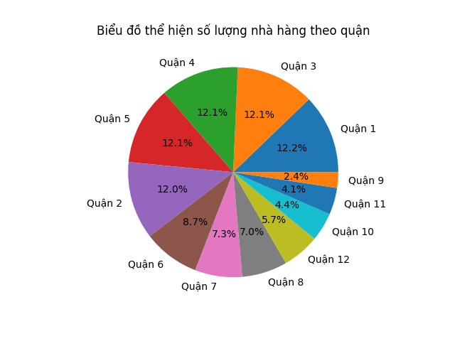

About data
Chúng tôi đã sử dụng bộ dữ liệu Shoppe food
Bộ dữ liệu Shopee Food bao gồm các cột sau:
| Cột |
Mô tả |
| ID |
Mã định danh duy nhất cho mỗi đánh giá. |
| User |
Mã định danh duy nhất cho người dùng thực hiện đánh giá. |
| Time |
Thời điểm đánh giá được thực hiện. |
| Rating |
Đánh giá của người dùng (thường là thang điểm từ 1 đến 10). |
| Comment |
Bình luận của người dùng về trải nghiệm. |
| IDRestaurant |
Mã định danh duy nhất cho nhà hàng được đánh giá. |
Một số data mẫu
Data người dùng đánh giá nhà hàng:
|
ID
|
User
|
Time
|
Rating
|
Comment
|
IDRestaurant
|
{% for i, row in data_mau.iterrows() %}
| {{row.ID}} |
{{row.User}} |
{{row.Time}} |
{{row.Rating}} |
{{row.Comment}} |
{{row.IDRestaurant}} |
{%endfor%}
Data các nhà hàng:
|
ID
|
Restaurant
|
Address
|
Time
|
Price
|
District
|
{% for i, row in data_nha_hang_mau.iterrows() %}
| {{row.ID}} |
{{row.Restaurant}} |
{{row.Address}} |
{{row.Time}} |
{{row.Price}} |
{{row.District}} |
{%endfor%}
Mục đích sử dụng
Bộ dữ liệu Shopee Food có thể được sử dụng cho nhiều mục đích khác nhau, bao gồm:
- Phân tích mức độ hài lòng của khách hàng với các nhà hàng Shopee Food.
- Xác định các nhà hàng có hiệu suất tốt và kém.
- Cải thiện trải nghiệm của khách hàng trên Shopee Food.
- Phát triển các chiến lược marketing và quảng cáo cho Shopee Food.
Bộ dữ liệu này có thể hữu ích cho các nhà nghiên cứu, nhà phân tích dữ liệu, và các nhà quản lý trong
lĩnh vực thương mại điện tử và dịch vụ giao thức ăn.
EDA

Nhận xét
|
Phân tích tổng thể
|
Phân tích chi tiết
|
Kết luận
|
| Biểu đồ hình tròn thể hiện tỉ lệ phần trăm số lượng nhà hàng tại các quận của một thành phố.
Biểu đồ được chia thành 12 phần, mỗi phần đại diện cho một quận. Quận 1 có số lượng nhà hàng
cao nhất (chiếm 12.2%). Quận 9 và Quận 11 có số lượng nhà hàng thấp nhất (cùng chiếm 4.1%)
|
Nhóm quận có số lượng nhà hàng cao (trên 10%): Quận 1: 12.2% Quận 3: 12.1% Quận 4: 12.1%
Quận 5: 12.1% Nhóm quận có số lượng nhà hàng trung bình (5% - 10%): Quận 2: 8.7% Quận 6:
7.3% Quận 7: 7.0% Quận 10: 5.7% Nhóm quận có số lượng nhà hàng thấp (dưới 5%): Quận 8: 4.4%
Quận 9: 4.1% Quận 11: 4.1%
|
Biểu đồ cho thấy sự phân bố không đồng đều số lượng nhà hàng giữa các quận. Khu vực trung
tâm thành phố (Quận 1, 3, 4, 5) có mật độ nhà hàng cao nhất. Khu vực ngoại thành (Quận 8, 9,
11) có mật độ nhà hàng thấp nhất.
|
Các tính từ được comment nhiều nhất
Biểu đồ đám mây này cho thấy:
Các tính từ phổ biến nhất: Ngon, đặc biệt, nhiều ổn.
Những tính từ này tiết lộ:
|
Điều gì quan trọng nhất đối với thực khách
|
Mức độ hài lòng
|
Từ ngữ thường được sử dụng để mô tả nhà hàng
|
| Thực khách quan tâm nhất đến hương vị món ăn, chất lượng
dịch vụ, giá cả và không gian nhà hàng.
|
Mức độ hài lòng của thực khách: Nhìn chung, thực khách hài lòng với trải nghiệm ăn uống tại
nhà hàng.
|
Từ ngữ thường được sử dụng để mô tả nhà hàng: Thực khách thường sử dụng các từ ngữ tích cực
để mô tả nhà
hàng, như "ngon", "tuyệt vời", "phục vụ tốt", "giá cả hợp lý", "không gian đẹp".
|